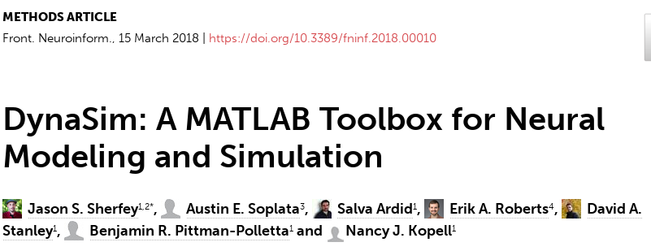

Thalamic Control of Propofol Phase-amplitude Coupling
Austin Soplata, Boston University Access this presentation live at: asoplata.com/talk
Background / Methods
Propofol Alpha and Slow Wave
Why do we care?
- Better understanding of propofol mechanisms could lead to more targeted anesthetics
- Clarify mechanistic differences between between anesthesia and sleep, including rhythms
- Propofol coupling correlates with depth of anesthesia, as can be used in the Operating Room
- Coupling mechanisms may tie to specific aspects of loss of consciousness
Sleep Spindles vs Propofol Alpha
Propofol Mechanisms of Action
- Increases \(GABA_A\) inhibition:
- Increases max synaptic conductance (\(\uparrow\bar g_{GABA_A}\) )
- Increases decay time constant (\(\uparrow tau_{GABA_A}\) )
- Decreases thalamocortical (TC) cell H-current conductance (\(\downarrow \bar g_H\) )
- Decreases Excitation from brainstem (\(\downarrow I_{applied}\))
Our Model Thalamus
Overview
Overview
- Increase of \(GABA_A\) and decrease of TC cell H-current are required for thalamic Alpha oscillations
- Thalamic Alpha oscillations are sustained spindles
- Interaction between thalamic Alpha and Slow Wave Activity can produce propofol phase-amplitude coupling regimes
\(GABA_A\) and H-current changes are required for thalamic Alpha oscillations
Native hyperpolarized thalamus cannot produce Alpha oscillations
Simulating \(GABA_A\) increase enables thalamic Alpha oscillations
Alpha requires H-current decrease
Summary So Far
- Sustained Alpha does not occur normally
- \(GABA_A\) increase is a necessary factor for sustained Alpha
- TC cell H-current decrease is also a necessary factor for sustained Alpha
Overview So Far
- Increase of \(GABA_A\) and decrease of TC cell H-current are required for thalamic Alpha oscillations
- Thalamic Alpha oscillations are sustained spindles
- Interaction between thalamic Alpha and Slow Wave Activity can produce propofol phase-amplitude coupling regimes
Thalamic Alpha oscillations are sustained spindles
Sustained alpha emerges from Baseline spindles
Summary So Far
- Propofol thalamic alpha takes advantage of thalamic spindle dynamics (e.g. \(T_{window}\))
- Enhanced inhibition enables more spiking/oscillating due to T-current and H-current interplay
Overview So Far
- Increase of \(GABA_A\) and decrease of TC cell H-current are required for thalamic Alpha oscillations
- Thalamic Alpha oscillations are sustained spindles
- Interaction between thalamic Alpha and Slow Wave Activity can produce propofol phase-amplitude coupling regimes
Alpha-SWO Coupling
Slow Wave Oscillations

Phase-amplitude Coupling Switches
Our Full Model Network
Simulating UP vs DOWN states

Simulating UP vs DOWN states

Trough-max thalamic alpha

Trough-max comparison
Peak-max thalamic alpha
Peak-max comparison

Coupling Summary So Far
- Given SWO UP/DOWN transitions coming from cortex to thalamus,
- “trough-max” Alpha can be generated during DOWNs by the thalamus
- “peak-max” Alpha can be generated during UPs by the thalamus
- Overall thalamic hyperpolarization is the critical factor for switching the thalamus between trough-max and peak-max
Conclusions
Conclusions 1
- Propofol sustained alpha may come from its \(GABA_A\) increase and H-current decrease in the thalamus.
- This propofol alpha is dependent on the spindling dynamics of the thalamus.
Conclusions 2
- During “trough-max” propofol coupling, the thalamus may cause the sustained Alpha in the DOWN/trough phase. Similarly, in “peak-max” coupling, the thalamus may cause the sustained Alpha seen during the UP/peak phase.
- Increased hyperpolarization of the thalamus is sufficient to switch from trough-max thalamic firing to peak-max thalamic firing, and vice versa.
Implications
- Propofol alpha may arise from the thalamus.
- Hyperpolarization level of the thalamus may determine which coupling regime is present (trough-max or peak-max), and may be controlled by specific brainstem nuclei.
- Since propofol alpha is not present during trough-max UP states, there may still be corticothalamic communication during trough-max.
Acknowledgements
- Kopell Lab @ BU: Nancy Kopell, Michelle McCarthy, Jason Sherfey, Erik Roberts, alums Shane Lee, ShiNung Ching, Sujith Vijayan
- CRC community
- BU Graduate Program for Neuroscience, especially Shelley Russek and Sandi Grasso
- Anesthesia research @ MIT: Emery Brown lab, Patrick Purdon lab, Christa van Dort lab, Ken Solt lab
- NIH, NSF, and HHS for funding including training
Simulation Code
Our lab uses and develops the DynaSim Simulator originally created by Jason Sherfey. All the code necessary to run these simulations is available on GitHub here! 
Appendix
Detail: \(T_{window}\) is critical

Detail: Propofol Alpha mechanism

References
CSS
Astori, Simone, Ralf D. Wimmer, and Anita Lüthi. 2013. “Manipulating Sleep Spindles – Expanding Views on Sleep, Memory, and Disease.” Trends in Neurosciences 36 (12): 738–48. https://doi.org/10.1016/j.tins.2013.10.001.
Crunelli, Vincenzo, and Stuart W Hughes. 2010. “The Slow (<1 Hz) Rhythm of Non-REM Sleep: A Dialogue Between Three Cardinal Oscillators.” Nature Neuroscience 13 (1): 9–17. https://doi.org/10.1038/nn.2445.
Mukamel, E. A., E. Pirondini, B. Babadi, K. F. K. Wong, E. T. Pierce, P. G. Harrell, J. L. Walsh, et al. 2014. “A Transition in Brain State During Propofol-Induced Unconsciousness.” Journal of Neuroscience 34 (3): 839–45. https://doi.org/10.1523/JNEUROSCI.5813-12.2014.
Soplata, Austin E., Michelle M. McCarthy, Jason Sherfey, Shane Lee, Patrick L. Purdon, Emery N. Brown, and Nancy Kopell. 2017. “Thalamocortical Control of Propofol Phase-Amplitude Coupling.” PLOS Computational Biology 13 (12): e1005879. https://doi.org/10.1371/journal.pcbi.1005879.